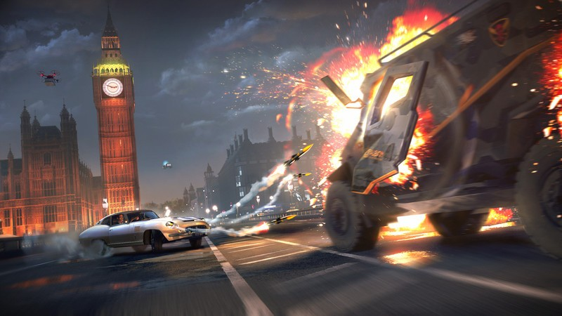

GamingKosovo


COPYRIGHT © 2019-2020 GamingKosovo | TË GJITHA TË DREJTAT E REZERVUARA
Londra e mbushur me ushtarë të cilët shtypin lirinë e njerëzve, drona të cilët monitorojnë çdo lëvizje, krim e korrupsion dhe njerëz të maskuar të cilët protestojnë për të drejtat e tyre është ajo çfarë do të na sjellë seria e Watch Dogs kësaj here.
sjell historinë e kryeqytetit të Anglisë gjatë një të ardhmeve të errët post-Brexit ku Londra “është pushtuar” nga një ushtri private, korporata të cilat duan të përfitojnë dhe kriminelë të ndryshëm të cilët kanë marrë në dorë kontrollin e qeverisë. Pas disa sulmeve terroriste në Londër, faji i hidhet DedSec që është një organizatë hacker-ash që lufton krimin dhe që e kemi hasur më përpara gjatë Watch Dogs 1 në qytetin e Çikagos dhe Watch Dogs 2 në qytetin e San Françisko.
Historia nis me Dalton Wolfie i cili ka qenë një agjent i vjetër i shërbimeve sekrete angleze dhe që po bashkëpunon me DedSec për të çaktivizuar disa bomba të cilat janë vendosur nëpër vende të ndryshme të Londrës. Pasi ky mision dështon, bombat e vendosura nëpër Londër shpërthejnë, Dalton qëllohet nga dronët dhe i gjithë faji i hidhet DedSec. Tashmë DedSec duhet të rekrutojë njerëz në organizatën e saj për të pastruar emrin e tyre dhe të luftojnë krimin dhe korrupsionin që ka pushtuar Londrën. Gjatë historisë do të përballeni me 5 antagonistë të cilët kontrollojnë aspekte të ndryshme të qytetit të Londrës duke filluar nga ushtria private në rrugë dhe deri tek dronët që fluturojnë në qiell ose tek trafiku i organeve njerëzore. Të pestë këta antagonistë kanë një histori speciale dhe do t’iu duhet t’i luftoni ata njëri pas tjetrit
Banorët e Londrës janë të nxehur nga këto lloj ngjarjesh dhe janë gati për t’u kryengritur. Kjo gjë iu bën ju personin i cili do të lëvizi ingranazhet e kësaj historie. Nëpërmjet sistemit të ri, All Playable Characters, do të mundeni të rekrutoni çdo person që shikoni nëpër rrugët e Londrës. Secili prej këtyre personave ka nga një talent ose aftësi dhe nëse e shikoni të arsyeshme ju mund t’i rekrutoni ata në mënyrë që mund t’iu ndihmojnë gjatë misioneve tuaja.
Disa prej tyre ju mund t’i rekrutoni direkt kurse disa të tjerë duhet ti rekrutoni duke iu ardhur në ndihmë nëpërmjet një misioni të vecantë që ata kanë. Gjithashtu do të hasni edhe persona të cilët nuk mund t’i rekrutoni. Këta persona do t’iu raportojnë direkt që në momentin që vënë re se një pjestar i DedSec është në lëvizje. Historia është vërtet tërheqëse edhe pse ndonjëherë mund të kishte klishe të ndryshme. Një ndër problemet që hasëm gjatë kësaj historie ishte se përdorimi i shumë karaktereve iu bën të mos krijoni një lidhje me personazhin duke bërë që historia ta humb pak vlerën e saj. Gjithashtu gjatë lojës do të takoheni me fytyra të njohura dhe një ndër ta është rreperi londinez, Stormzy, të cilin do ta shikoni të performojë brenda në lojë.
Në shumicën e lojërat e tjera ju fokusoheni në vetëm një personazh por në Watch Dogs Legion ju do të keni mundësinë të përdorni një prej mijëra karaktereve që iu pëlqejnë.
as përfundimit të historisë kryesore ju mund të eksploroni Londrën dhe të gjeni Easter Eggs të ndryshëm ose të kryeni misione dytësore të cilat tregojnë më shumë rreth ngjarjeve që kanë ndodhur në ketë të ardhme të errët që Londra ka. Më 3 Dhjetor Ubisoft do të sjellë multiplayer online co-op ku ju do të mundeni grupoheni me shokët tuaj dhe të kryeni misione të ndryshme ose të eksploroni qytetin.
Si përfundim mund të themi që Ubisoft ka kryer një punë të shkëlqyer duke ndërtuar jo vetëm qytetin e Londrës por edhe popullsinë e saj në mënyrën më të detajuar të mundshme dhe duke iu dhënë rëndësinë e vetë secilit prej tyre. Kombinimi i këtij vendi me historinë realizohet në mënyrë pothuajse perfekte duke treguar të veçantat e të dyjave. Bashkë me ndërveprimin që keni me lojën, grafikat të cilat iu japin një ndjesi speciale të kombinuara bashkë me audion e bëjnë Watch Dogs Legion një lojë që çdokush duhet ta provojë.
COPYRIGHT © 2019-2020 GamingKosovo | TË GJITHA TË DREJTAT E REZERVUARA